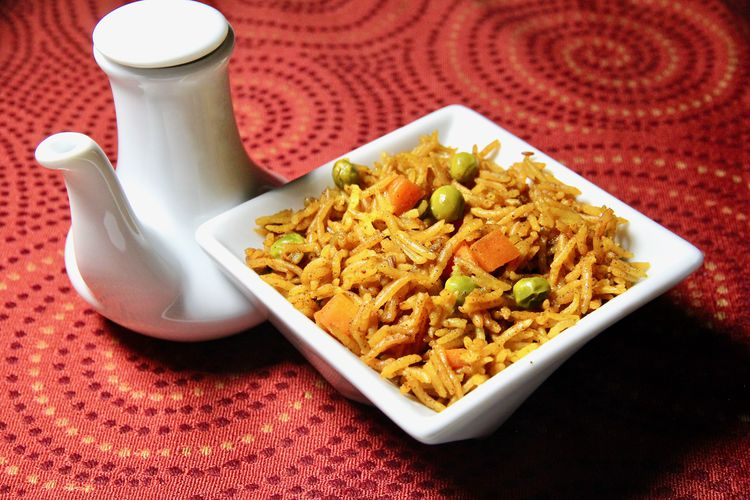

Pilav Recipe

World's Best Pilav
This is a tasty Indian side dish made easily and quickly in the Instant Pot®.
Ingredients
- 1 tablespoon vegetable oil
- ¼ cup diced red onion
- ½ teaspoon salt
- 1 ½ cups vegetable broth
- 1 cup uncooked basmati rice, rinsed and drained
- ½ cup frozen peas and carrots
Steps
- Turn on a multi-functional pressure cooker (such as Instant Pot®) and select Saute function. Heat oil in the pot. Add cumin seeds and stir until they just start to pop. Stir in onion and cook until they begin to soften, about 2 minutes. Season with garam masala, turmeric, and salt. Add vegetable broth, rice, frozen peas and carrots, and bay leaf; stir until well combined.
- Close and lock the lid. Select high pressure according to manufacturer's instructions; set timer for 5 minutes. Allow 10 to 15 minutes for pressure to build.
- Release pressure using the natural-release method according to manufacturer's instructions, 10 to 40 minutes. Manually release any remaining pressure. Unlock and remove the lid. Remove bay leaf. Taste rice and adjust seasoning if necessary before serving.
Home